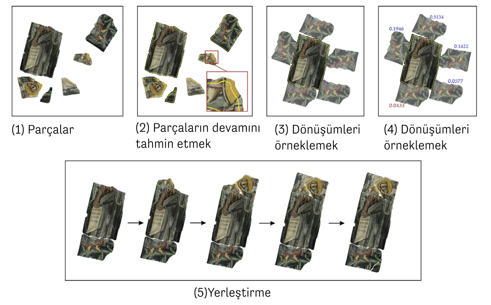
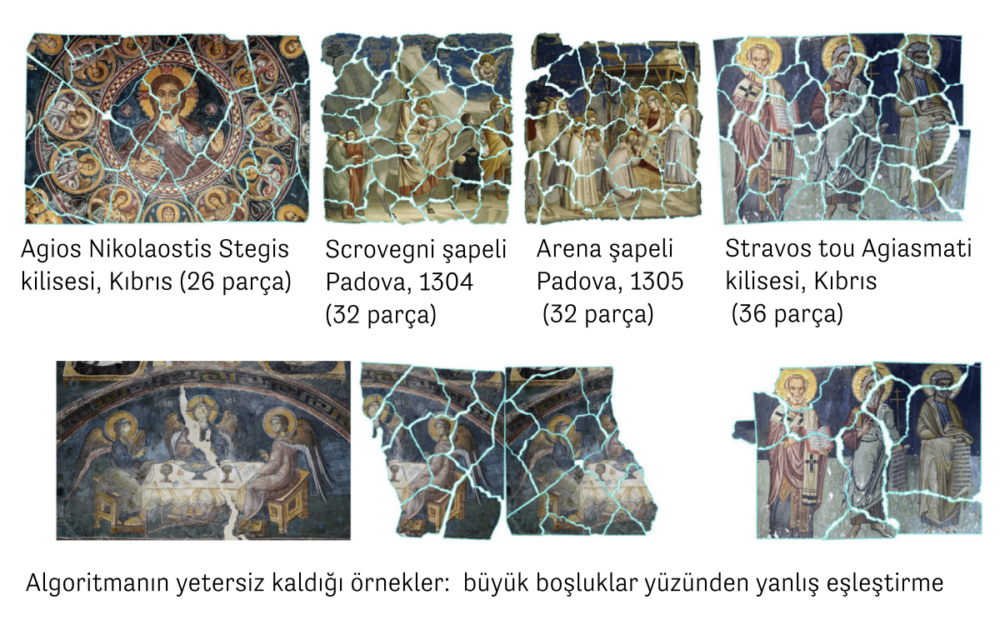
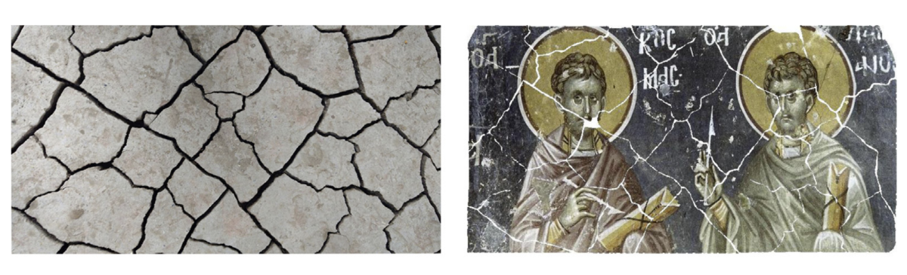
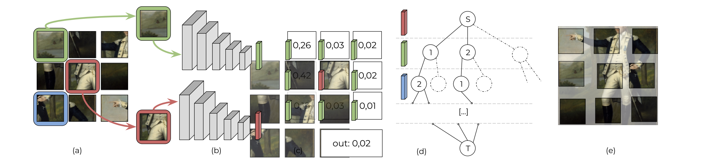
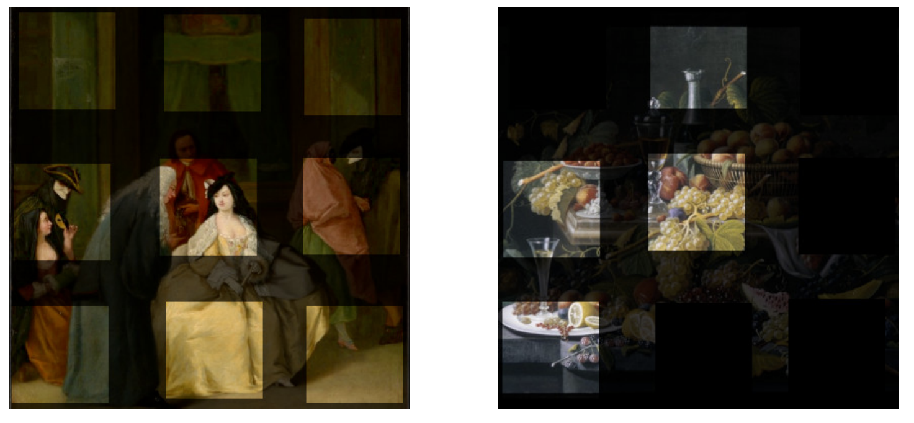

From Archaeological Puzzles to Lost Frescoes
Although it may seem like a game or a leisure activity, solving puzzles is a serious business. From biology to chemistry, from medicine to the analysis of ancient documents, and even archaeology, solving puzzles interests many different fields. For example, DNA sequencing in bioinformatics or finding molecular structures with desired properties in computational chemistry are puzzles. Puzzles are solved in different ways. Let’s look at one of the most well-known ones, the jigsaw puzzle. No algorithm determines whether a given jigsaw puzzle has a solution and, if it does, how long it takes to solve it. In other words, solving a jigsaw puzzle is an “NP-complete”1 complexity problem, just like the “traveling salesman” problem2. Let us continue completing the missing pieces that we started with colors in the previous article by solving puzzles in cultural heritage conservation and archaeology.
Reconstructing a Fresco from its Broken Pieces
On a puzzle box, we see the picture we will get if we manage to make it. The most challenging thing about solving a fresco from its broken pieces is, above all, that we have probably never seen the picture they form before. Of course, the difficulties of solving archaeological puzzles are not limited to this. The fragments could be in any shape. Broken by natural factors, earthquakes, or man-made, they are not standardized like a jigsaw puzzle set. They are worn at the edges and corners, where we would expect them to be uniform in color. There are also missing pieces. The transformation between the parts is continuous. There may be not just two pieces but many pieces that fit together in a way that seems right.
A study3 by researchers Niv Derech, Ayellet Tal, and Ilan Shimshoni from the Technion and the University of Haifa in Israel brings several innovations to the solution of archaeological puzzles. Just as interesting as their mathematical approach is that their proposed method can accurately solve puzzles constructed from different, authentic fresco patterns. Let’s take a look at the details of this work together.
According to Derech and colleagues, three features make archaeological puzzles difficult: The first is wear. Abrasion causes gaps to remain between the joined pieces. The second is fading colors. Since color is essential information for understanding whether two pieces are related, it must be usable despite fading. The third is that the current transformation between each part is continuous. So we can put it like this: We don’t have a frame on which to place the pieces, and we don’t have a grid (or a sieve) on which all the pieces sit. Each piece can rotate in any direction and be placed a few millimeters to the right, left, up, or down.

Now, let’s look at the methodology for solving archaeological puzzles used in this study, summarized in the figure above. The first step is to guess the continuation of the fragments. The existing pieces may be partially damaged, with missing edges and corners. In the first step, they predict and expand the continuation of these fragments in small strips around them. It does this by solving an optimization problem that takes into account the color and texture variation of each fragment, as well as its shape and photometric properties. Since the colors present in a fresco fragment are already limited, this method uses only the colors in the main fragment to predict the continuation of the fragments.
Once the edges of the pieces are slightly widened, the next step is to start experimenting. In the same way that when we start solving a puzzle, we try to see if two pieces fit together, at this stage, a series of suggestions are made based on similarities in color and shape. Of course, not all of these suggested transformations will be the right solution, but we will try to choose the right one.
As we mentioned earlier, finding perfect matches in archaeological puzzles is often impossible. If the pieces are already perfectly matched, it’s likely that humans will quickly solve this problem, and there would be no need for such an algorithm. So this step is to create a “difference value” for each valid transformation sampled earlier. This numerical value expresses how mismatched the two parts are in their proposed relative positions. For an incompatible transformation, it will have a reasonably high value. The goal of the mathematical optimization will be to minimize this dissimilarity value. In this way, we can find transformations with a small dissimilarity value that complement each other in color and shape and find good matches.
The final step is to use the dissimilarity values calculated in the previous step to combine the pieces in sequence, starting with one piece. Often, the original size of the fresco and the wall where the fragments are located is known, so this information is also used.

In the image above, examples of puzzles are solved by following these steps. The examples in the top row are the successful ones. What they have in common is that there are no significant gaps between them. The fresco in the second row has a very large gap in the center. That’s why the algorithm couldn’t place the left and right sides of the table correctly.

The frescoes and paintings in the figure and the other examples in this work were originally taken from different churches and the British Museum collections. However, the pieces are not authentic. They produced pieces to simulate the fractures on dry clay and synthetically made the fresco fractures accordingly. The use of dry clay shards is directly related to the method of making the frescoes. Although this method has been used since antiquity, it was developed in Italy in the 13th century and became one of the symbols of the Renaissance: Two layers of plaster are applied to the wall to be painted, and on the second layer, the design to be painted is drawn in general outline. Before the top layer of plaster is completely dry, the entire surface is painted with water-based paint while it is still wet. Since it has to be done wet, the artist who paints frescoes usually prepares as much plaster as he can paint in one day. After all, fresco [fresco] means fresh in Italian. That’s why they simulate fractures with fractures as if a clay surface had been frozen and broken. Damaged frescoes can also be deformed similarly to the textures on dried clay.
Learning from Data: Is Better Possible?
Reassembling frescoes and solving them like a puzzle can be seen as a reconstruction technique used in restoration, a form of anastylosis. The archaeological term anastylosis (αναστήλωσις) is made up of two words in ancient Greek, meaning “again” and “to sew.” It is used to restore historical artifacts that have been damaged over time, from large columns to pottery or smaller works of art. As in the case of the frescoes, we saw how the pieces were placed digitally using mathematical methods.
The previous study uses the similarities in color and shape of the pieces to solve a puzzle based on the number of pieces, for example, 36 pieces, in 200 minutes. Machine learning and deep learning, a sub-branch of artificial intelligence, offer this possibility in thousands or millions of examples. Although machine learning methods do not work well for combinatorial problems such as “crossword puzzles” and are insufficient on their own, it is worth considering whether they could help solve archaeological puzzles. Can we train deep learning models on other examples of frescoes or paintings from similar periods, made of similar materials and colors, to place them from their fragments?
Yes, there are efforts in this direction. The Deepzzle method5 6, whose working diagram is shown in the figure below, was trained on a dataset of 14,000 photographs and paintings shared by the Metropolitan Museum of Art in New York under an open access policy7. The images are divided into 3 × 3 pieces. In the first stage, a deep learning model is trained to predict the relative relationship (above, below, to the right, or the left) between the centerpiece and a given other piece. In the second stage, the fragments and the probabilities predicted by the deep learning method are used to create structures called graphs. Graphs consist of nodes and edges connecting these nodes. Then, the shortest path optimization solved on the graphs gives the optimal placement.

At first, solving 3 × 3 puzzles in the Deepzzle method seems easier than the previous work. Also, the pieces are square. However, learning this problem from thousands of images, i.e., “learning from data,” has advantages over solving it by combinatorial optimization alone. By using machine learning methods on a data set similar to a fresco, pottery shards, or paintings we want to solve, we learn the spatial similarity between the pieces, allowing us to make better placements.

Conclusion
This article approached solving archaeological puzzles as an example of digital anastylosis. We have seen it in two-dimensional examples in frescoes or digitized paintings. Similar methods are also used for the computer-based completion of three-dimensional archaeological objects. Recovering a lost fresco where the fragments are badly damaged, and there are many of them, is a challenging problem. Nevertheless, it is exciting to see developments in this direction. Although experts often do restoration, that is, by human hands, the technologies we have examined can speed up these processes and complete parts that are not easily recognizable to the human eye.